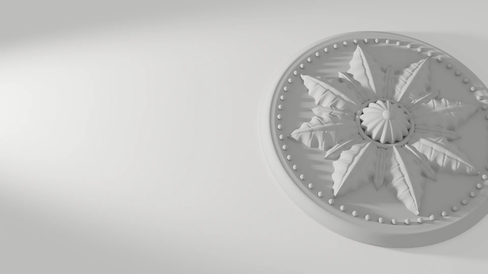
El acabado se nota en el techo.
Escayola, pladur, pintura y reformas en Las Palmas de Gran Canaria. Techos, paredes, fachadas y azoteas para viviendas, comunidades, locales y empresas.
Visita y presupuesto sin compromiso.
-
Pintura
Pisos, chalés, empresas, locales y oficinas, por dentro y por fuera.
-
Materiales
Usamos los mejores materiales de construcción en cada trabajo.
-
Escayolas
Escayola y refilos en obra nueva y en reformas de viviendas.
Qué hacemos
Trabajamos en obra nueva y en reforma. Si tu obra necesita varios oficios, como escayola, pintura y alicatado, los hacemos nosotros y no tienes que coordinar a nadie.
-
Techos lisos, sin ondas ni juntas a la vista, y remates limpios en cada encuentro con la pared. Es el oficio que da nombre a la casa.
- Techos continuos y registrables
- Molduras, cornisas y refilos
- Foseados para luz indirecta
- Tabiques y trasdosados de pladur
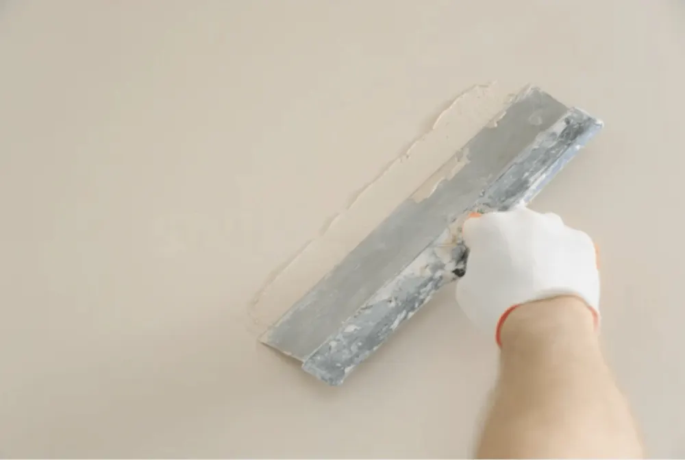
-
Interior y exterior para pisos, chalés, locales, oficinas y empresas. Antes de pintar preparamos bien la superficie: es lo que hace que la pintura dure.
- Pisos y chalés
- Locales, oficinas y naves
- Fachadas y patios
- Revestimientos decorativos
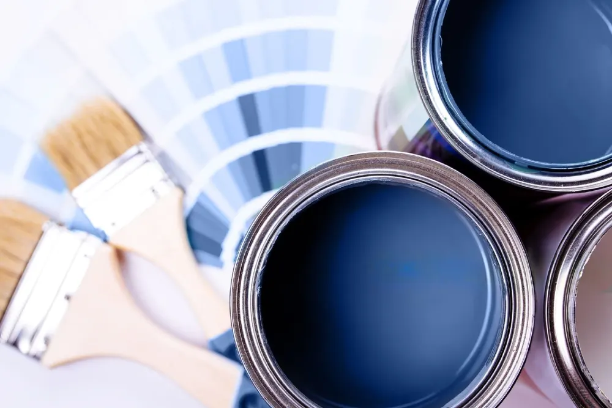
-
Baños, cocinas y reformas completas de vivienda, con un único interlocutor desde el presupuesto hasta la entrega.
- Alicatado de baños y cocinas
- Insonorización de paredes
- Nuevas distribuciones con pladur
- Remates y acabados
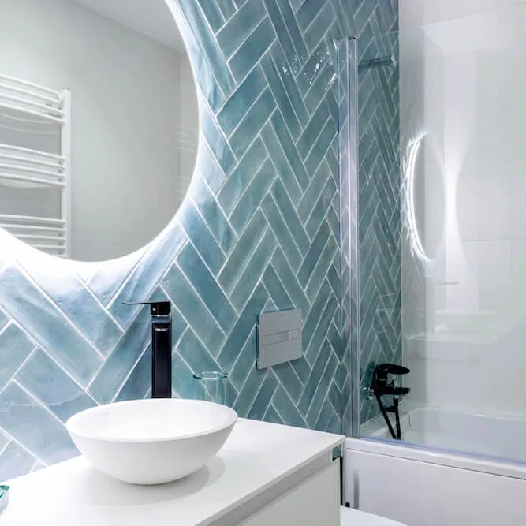
-
Trabajamos en altura sin andamio. Es la solución para patios de luces y fachadas de comunidades donde montar un andamio es caro o directamente imposible.
- Pintura de patios y fachadas
- Malla contra caída de cascotes
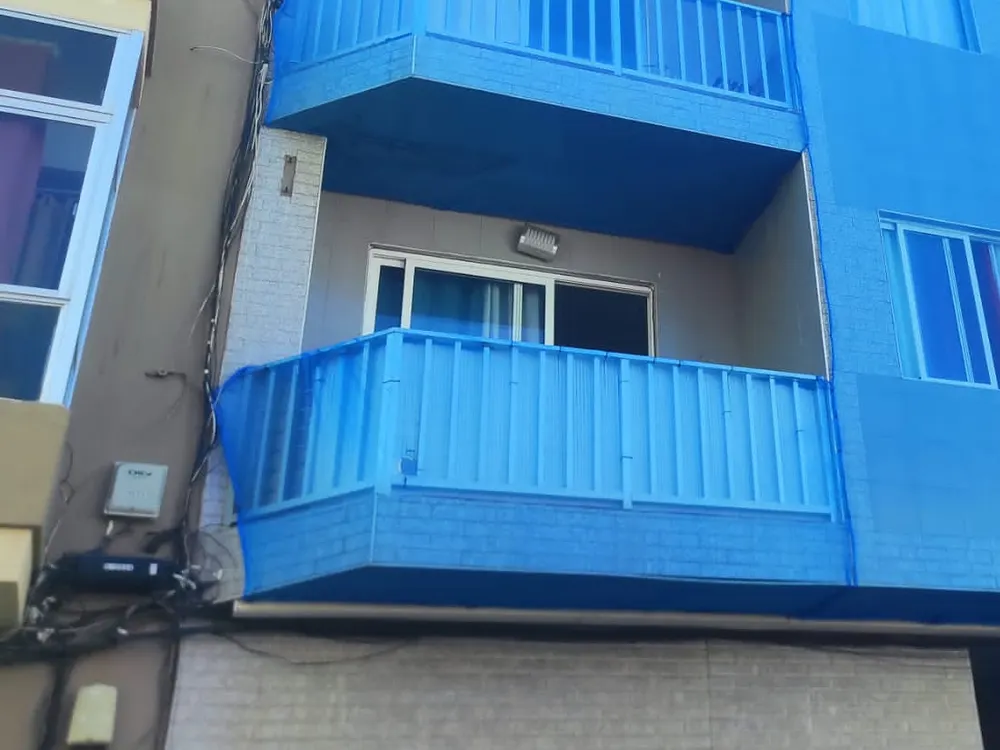
-
Impermeabilizamos azoteas, cambiamos bidones y resolvemos la fontanería que va con ellos. En naves industriales, aislamiento térmico con poliuretano proyectado.
- Impermeabilización de azoteas
- Cambio de bidones y fontanería
- Poliuretano proyectado en naves
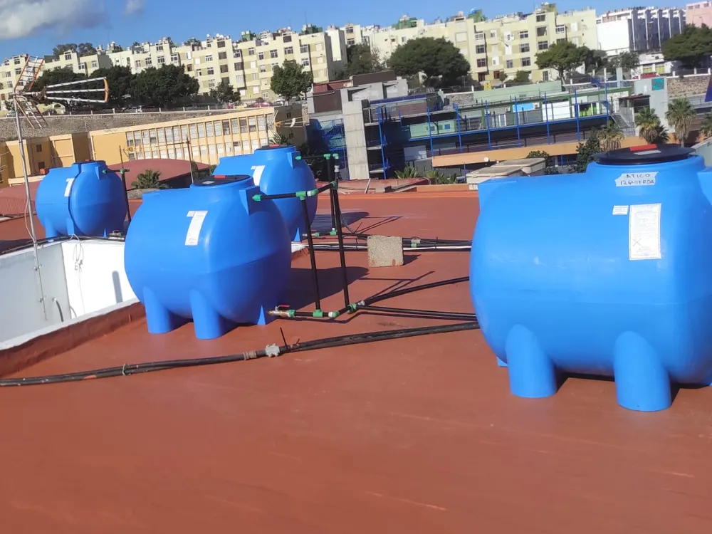
Cómo trabajamos
Cuatro pasos, siempre los mismos, para que sepas en todo momento en qué punto está tu obra.
-
Visita y medición
Vamos a ver la obra, tomamos medidas y te asesoramos sobre materiales y acabados.
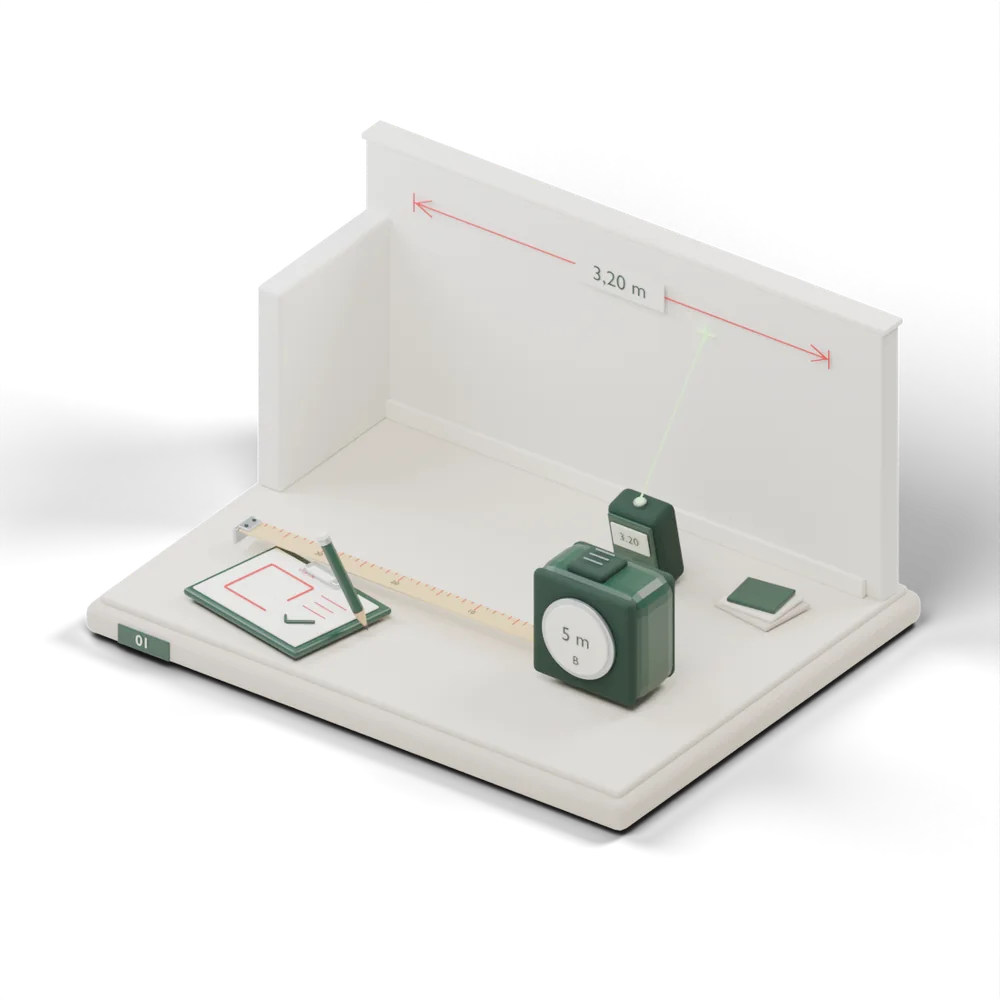
-
Presupuesto por escrito
Detallado por partidas y con plazo de ejecución. Sin compromiso.
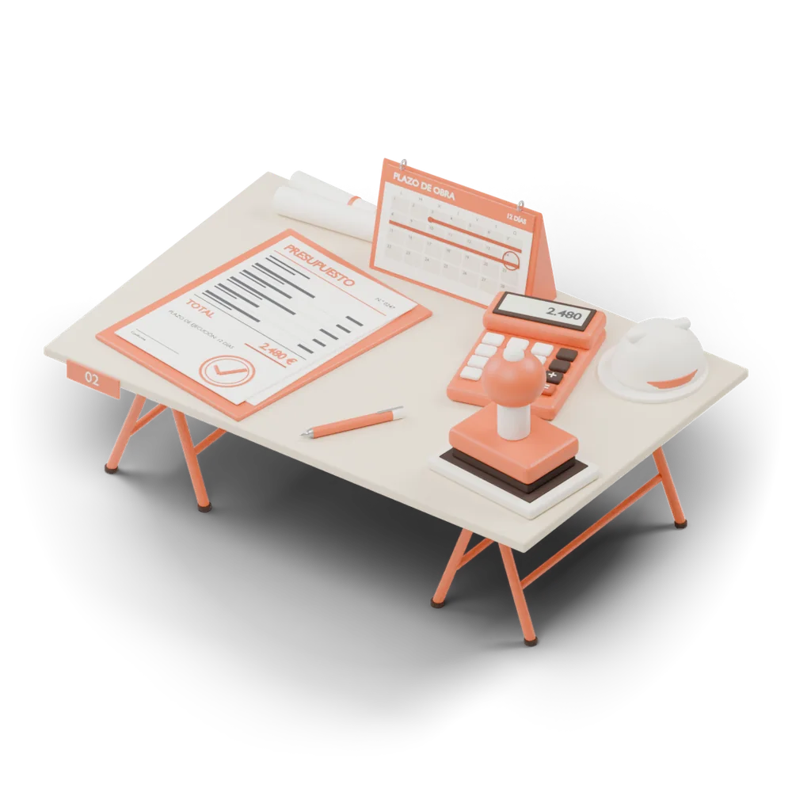
-
Obra limpia
Protegemos suelos y muebles, y dejamos todo recogido al final de cada jornada.
-
Entrega y repaso
Revisamos contigo cada estancia antes de dar el trabajo por terminado.
Obra reciente
Fotos hechas en obra con el móvil, sin retocar. Preferimos enseñarte trabajos nuestros antes que imágenes de catálogo.
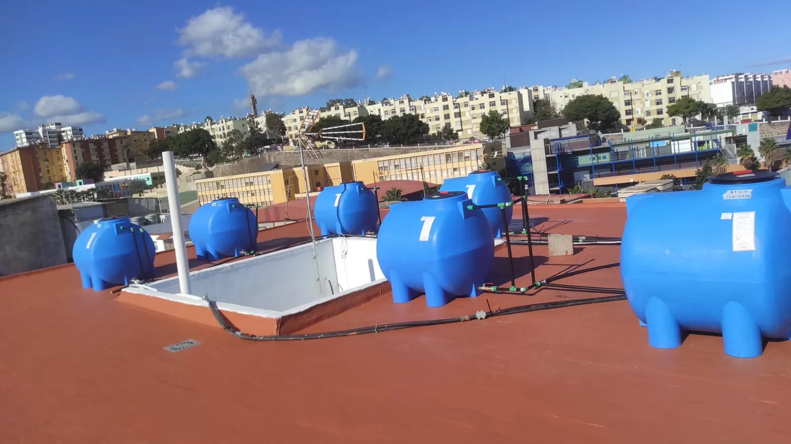
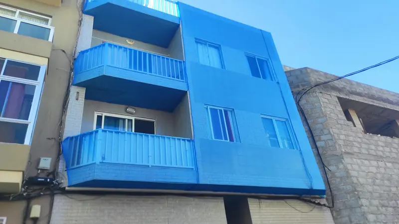
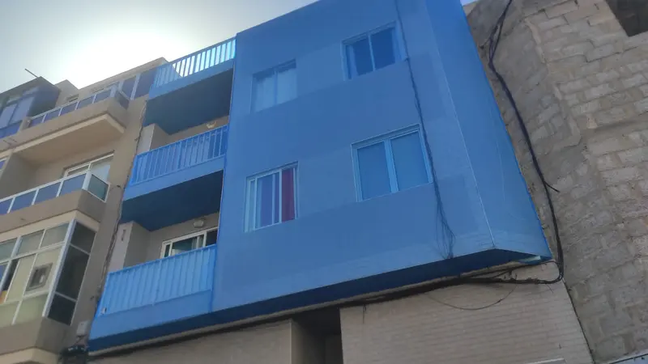
Lo que dicen nuestros clientes
«No puedo creer la transformación que lograron. De una pared descuidada a una que parece nueva. Los pintores son muy buenos en su oficio.»
«¡Increíble trabajo! Profesionales, puntuales y con una atención al detalle excepcional. ¡Los recomiendo ampliamente!»
«Siempre están dispuestos a escuchar mis ideas y sugerencias, y ofrecen asesoramiento experto. Hacen que el proceso sea sin complicaciones.»
Cuéntanos tu obra
Dinos qué necesitas y te llamamos para concretar la visita. Si lo prefieres, llámanos o escríbenos por WhatsApp.
- Teléfono y WhatsApp
- 660 81 26 51
- Correo
- info@tutistar.com
- Local
-
Calle Luis Benítez Inglott, 28, local 15
Las Palmas de Gran Canaria
Abrir en Google Maps